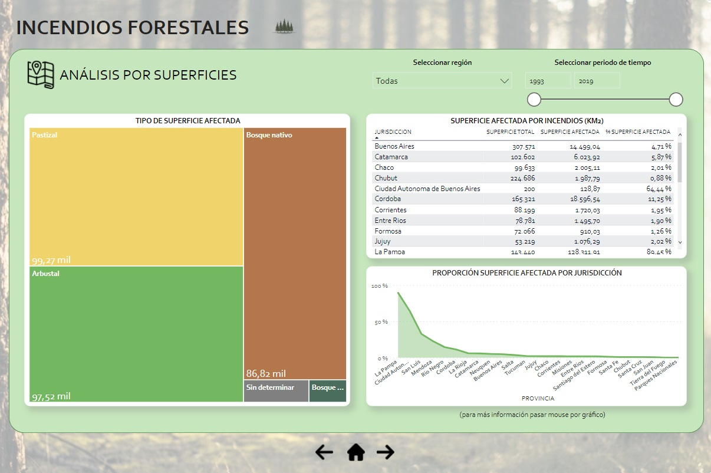

Incendios Forestales: un análisis a nivel nacional y provincial
Dada la preocupante situación de los incendios forestales en la República Argentina en los últimos años, decidí llevar a cabo un análisis de los mismos para poder demostrar su gravedad y que pueda servir como herramienta de concientización ante esta problemática ecológica que pone en peligro el lugar en donde vivimos.
1 / 7

Caption Text
2 / 7
Caption Two
3 / 7
Caption Three
3 / 7
Caption Three
4 / 7
Caption Four
5 / 7
Caption Five
6 / 7

Caption Six
7 / 7
Caption Seven
Herramientas:
para el trabajo se utilizó SQL, Google Sheets y Power Bi.
Para acceder a la documentación del proyecto hacer clic aquí